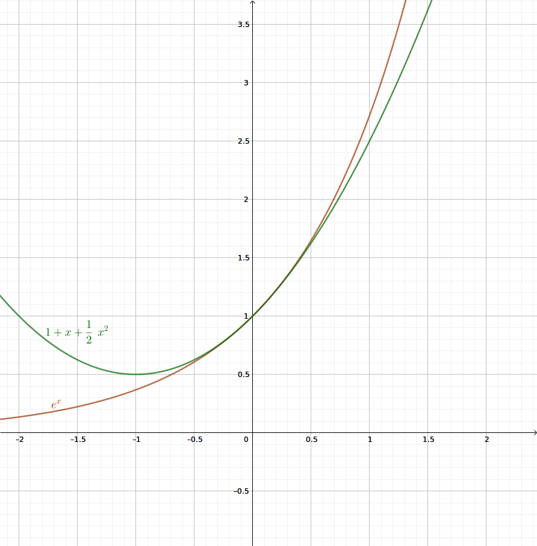

常用不等式
- \(x+1 \leqslant e^{x}\)\((x\in \mathbb{R})\)，当且仅当\(x=0\)时取等。
- \(x+1 \leqslant e^{x}\) \(\leqslant \dfrac{1}{1-x} \left(x<1\right)\)，当且仅当\(x=0\)时两个等号取等。
- \(ex\leqslant e^{x}\)，当且仅当\(x=1\)时取等。
- \(\dfrac{x}{1+x} \leqslant\)\(\ln \left(x+1\right) \leqslant x\)\((x>-1)\)，当且仅当\(x=0\)时两个等号取等。
- \(\dfrac{x-1}{x} \leqslant \ln \left(x\right) \leqslant x-1\)\((x>0)\)，当且仅当\(x=1\)时两个等号取等。
- \(\sqrt{x_1x_2}<\dfrac{x_{1}-x_{2}}{\ln x_{1}-\ln x_{2}}<\dfrac{x_{1}+x_{2}}{2}\)
拓展：泰勒展开
泰勒公式
设 \(n\) 是一个正整数。如果定义在一个包含\(a\)的区间上的函数\(f(x)\)在\(a\)点处\(n\)次可导，那么对于这个区间上的任意\(x\)，都有：
\[f(x)=f(a)+{\dfrac{f'(a)}{1!}}(x-a)+{\dfrac{f^{(2)}(a)}{2!}}(x-a)^{2}+\cdots+{\dfrac{f^{(n)}(a)}{n!}}(x-a)^{n}+R_{n}(x)\]
其中的多项式称为函数在\(a\)处的泰勒展开式，剩余的\(R_{n}(x)\)是泰勒公式的余项，是\((x-a)^{n}\)的高阶无穷小。
下面是几个常见的泰勒展开式，很多不等式也可由此推导。
\(e^{x}=1+x+ \dfrac{x^{2}}{2!}+ \dfrac{x^{3}}{3!}+ \cdots +\dfrac{x^n}{n!}+\dfrac{x^{n+1}}{\left(n+1\right)!}e^{\theta x},\quad 0<\theta<1\)
\(\ln \left(1+x\right)=x- \dfrac{1}{2}x^{2}+ \dfrac{1}{3}x^{3}- \dfrac{1}{4}x^{4} \cdots\)
\(\sin x=x- \dfrac{x^{3}}{3!}+ \dfrac{x^{5}}{5!} \cdots\)
\(\cos x=1- \dfrac{x^{2}}{2!}+ \dfrac{x^{4}}{4!}- \dfrac{x^{6}}{6!} \cdots\)
\(\tan x=x+ \dfrac{x^{3}}{3}+ \dfrac{2}{15}x^{5}+o\left(x^{5}\right)\)
不等式演绎
由\(e^{x}=1+\dfrac{x}{1 !}+\dfrac{x^{2}}{2 !}+\cdots+\dfrac{x^{n}}{n !}+\cdots\)得：
\[e^{x} \geqslant x+1\left(x \in \mathbb{R}\right) \tag{1}\]
由\(\left(1\right)\)式, 将\(x\)替换为\(-x\), 可得
\[e^{x} \leqslant \dfrac{1}{1-x}\boldsymbol{\left(x<1\right)} \tag{2}\]
则有：
\[x+1 \leqslant e^{x} \leqslant \dfrac{1}{1-x} \left(x<1\right)\tag{3}\]
对$ (3) $取以e为底的对数, 可得:
\[\ln \left(x+1\right) \leqslant x \leqslant-\ln \left(1-x\right) \quad\left(x>-1\right)\tag{4}\] 对于 \(x \leqslant-\ln \left(1-x\right),\) 将 \(x\) 替换为 \(\dfrac{x}{1+x}\) 可得:
\[\dfrac{x}{1+x} \leq-\ln \left(1-\dfrac{x}{1+x}\right)\]
结合\(\left(4\right)\)式可得: \[ \dfrac{x}{1+x} \leqslant \ln \left(x+1\right) \leqslant x\tag{5} \] 再将\(\left(5\right)\)式中的\(x\)替换为\(x-1\)又可得: \[ \dfrac{x-1}{x} \leqslant \ln \left(x\right) \leqslant x-1\tag{6} \]
再对图 1 (对应\(\left(3\right)\))中的三个函数图像作关于直线 \(y = x\) 对称的图形 , 相应函数的解析式相当于原函数的反函数 , 如图 2 , 与其对应的不等式是 \(\left(6\right)\)\(\dfrac{x-1}{x} \leqslant \ln x \leqslant x-1\)。若将图 2 的函数向左平移 1 个单位可得\(\left(5\right)\)\(\dfrac{x}{1+x} \leqslant \ln \left(x+1\right) \leqslant x\), 如图 3.
应用
预估取值范围
若\(x \geqslant 0,\) 求证: \(e^{x} \geqslant 1+x+\dfrac{1}{2} x^{2}\).
答案
泰勒展开即可。注意\(x<0\)时不成立，因为\(\dfrac{x^3}{3!}, \dfrac{x^5}{5!}, \cdots\)等项为负 
【变式】 设\(f \left( x \right) = e^x- ax - a\), 若\(f \left( x \right) \geqslant 0\)对\(∀ x \in[ -1 , + ∞ )\)恒成立 , 求\(a\)的取值范围.
【答案】\(a⩽1\)
(2010年理第21题)设函数 \(f \left( x \right) = e ^x -1- x - ax ^2\). 若当 \(x \geqslant 0\) 时 \(f \left( x \right) \geqslant 0\) , 求 \(a\) 的取值范围.
【法一】泰勒公式
【思路】 对泰勒公式\(e^{x}=1+ \dfrac{x}{1!}+ \dfrac{x^{2}}{2!}+ \cdots + \dfrac{x^{n}}{n!}+ \cdots\)，
首先得到\(e^{x} \geqslant 1+x+ \dfrac{1}{2}x^{2}\), 隐去 \(x ^2\) 前面的系数\(\dfrac{1}{2}\)改成求参数 a 的取值范围 , 易得答案为\(a \leqslant \dfrac{1}{2}\)
【具体作答过程】
构造函数\(g\left(x\right)=e^{x}-\left(1+x+\dfrac{x^{2}}{2}\right)\)\(\left(x\geqslant0\right)\),
则\(g′\left(x\right)=e^x-1-x\),\(g''\left(x\right)=e^x-1\geqslant0\),
所以\(g'\left(x\right)\)为\([0,+∞)\)上的单调递增函数,
从而有\(g′\left(x\right)>g\left(0\right)=0\),
从而\(g\left(x\right)\)为\([0,+∞)\)上的增函数,
所以\(g\left(x\right)\geqslant g\left(0\right)=0\),即\(e^{x}\geqslant1+x+\dfrac{x^{2}}{2}\)
当且仅当\(x=0\)时,等号成立. 得证.
由\(e^x-1-x-ax^2\geqslant0\)等价于\(e^{x}-\left(1+x+\dfrac{x^{2}}{2}\right)+\left(-a+\dfrac{1}{2}\right)x^{2}\geqslant0\).
显然,当\(a\leqslant\dfrac{1}{2}\)时,上式恒成立.
下证:当\(a>\dfrac{1}{2}\)时,上式不恒成立.
由\(f'\left(x\right)=ex-1-2ax\),\(f''\left(x\right)=e^x-2a\),
所以当\(x\in\left(0,\ln 2a\right)\)时,\(f''\left(x\right)<0\),\(f'\left(x\right)\)单调递减,
故\(f'\left(x\right)<f'\left(0\right)=0\),
此时\(f\left(x\right)\)在\(\left(0,\ln 2a\right)\)单调递减,
所以\(f\left(x\right)<f\left(0\right)=0\),故\(ex-1-x-ax^2\geqslant0\)在\([0,+∞)\)时不恒成立.
综上所述,\(a\leqslant\dfrac{1}{2}\).
【法二】小邻域
部分老师的做法：
由于 \(f \left( 0 \right) = 0\) , 所以\(f \left( x \right)\)在\(x = 0\)右侧的一个小邻域\(\left( 0 , δ \right)\) \(\left( δ > 0 \right)\)上递增 , 即\(f'\left( x \right) \geqslant 0\)在区间\(\left( 0 , δ \right)\)内成立. 又有\(f' \left( x \right) = e^x-1-2 ax\), \(f '\left( 0 \right) = 0\),
同样地,\(h \left( x \right) = f' \left( x \right)\)在区间\(\left( 0 , δ \right)\)内递增, 即\(h' \left( x \right) \geqslant 0\)对 \(x \in\left( 0 , δ \right)\)成立 . 因为\(h '\left( x \right) = e^x -2 a\), 所以\(a \leqslant \dfrac{e^{2}}{2}\)在区间 \(\left( 0 , δ \right)\)内成立 , 所以\(a \leqslant \dfrac{1}{2}\).然后再根据这个猜想来验证结论的正确性。
（2015年北京卷理18题第3问） 已知函数\(f \left( x \right) =\ln \dfrac{1+x}{1-x}\). 设实数\(k\)使得\(f\left(x\right)>k\left(x+ \dfrac{x^{3}}{3}\right)\)对\(x ∈ \left( 0 , 1 \right)\)恒成立, 求\(k\)的最大值.
答案
将函数\(f \left( x \right)\)拆解成\(\ln \left( 1+ x \right)\)与\(\ln \left( 1- x \right)\)的差 ,然后将该两项在\(x = 0\)处进行泰勒展开, 具体如下:
\[\ln \left(1+x\right)=0+x- \dfrac{1}{2}x^{2}+ \dfrac{1}{3}x^{3}- \dfrac{1}{4}x^{4}+ \dfrac{1}{5}x^{5}+ \cdots\]\[ \ln \left(1-x\right)=0-x- \dfrac{1}{2}x^{2}- \dfrac{1}{3}x^{3}- \dfrac{1}{4}x^{4}- \dfrac{1}{5}x^{5}-\cdots \]
上述两式作差, 有\(\ln\dfrac{\left(1+x\right)}{\left(1-x\right)}=2x+ \dfrac{2}{3}x^{3}+ \dfrac{2}{5}x^{5}+ \cdots\) 对比题干不等式可知, 可以令\(k\left(x+ \dfrac{x^{3}}{3}\right)\)中的\(k =2\),即可满足不等式恒成立.
不等式变形
\(e^x\geq x+1\)\((x \in \mathbb{R})\)是最常用的不等式。
在遇到不等式的题目时，即便题干没有出现标准的\(e^x\)，但只要出现了\(e\)、\(\ln\)、\(1\pm\square\)等字样或形式，考生就可以考虑先把多项式变形为\(e^\square\)或\(1+\square\)的形式，再使用\(e^\square\geq \square+1\)（\(\square\)代表任何表达式，无论正负零）。
下面通过具体例题说明这一点。
(2020.9.25轮测) 已知\(x>0\)时\(e^x>x+1,\) 求证：对任意的正整数 \(n,\) 都有 \(\left(\dfrac{1}{n+1}\right)^{n+1}+\left(\dfrac{2}{n+1}\right)^{n+1}+\left(\dfrac{3}{n+1}\right)^{n+1}\)\(+\cdots+\left(\dfrac{n}{n+1}\right)^{n+1}<1\).
答案
对\(k=0,1,2,\cdots,(n-1)\)都有：
\(\left(\dfrac{k+1}{n+1}\right)^{n+1}=\left(1-\dfrac{n-k}{n+1}\right)^{n+1}{ < \left(e^{-\frac{n-k}{n+1}}\right)}^{n+1}=e^{-(n-k)}\)
\(\text{原式}<e^{-n}+e^{-(n-1)}\)\(+e^{-(n-2)}+\ldots \ldots+e^{-1}\)\(=\dfrac{e^{-n}\left(1-e^{n}\right)}{1-e}<\dfrac{1}{e-1}<1\)
(作业题) 关于\(x\)的不等式\(\dfrac{e^{x}}{x^{3}}-x-a \ln x \geqslant 1\)对\(\forall x \in(1,+\infty)\)成立，求\(a\)的范围.
答案
\(\begin{aligned}a &\leqslant \dfrac{\frac{e^{x}}{x^{3}}-x-1}{\ln x}\\&=\dfrac{e^{x} \cdot x^{-3}-x-1}{\ln x}\\&=\left(\dfrac{e^{x-3 \ln x}-x-1}{\ln x}\right) _\min \\&=\dfrac{x-3 \ln x+1-x-1}{\ln x}\\&=-3\end{aligned}\)
(作业题) 求证：\(\left(\dfrac{1}{2 n}\right)^{n}+\left(\dfrac{3}{2 n}\right)^{n}+\left(\dfrac{5}{2 n}\right)^{n}+\cdots+\left(\dfrac{2 n-1}{2 n}\right)^{n} \leqslant \dfrac{\sqrt{e}}{e-1}\)对\(\forall n \in N^{*}\)成立.
答案
因为\(1+x \leqslant e^{x}\),
所以对任意正整数 \(n\) 有 \(0<1-\dfrac{i}{2 n} \leqslant e^{-\frac{i}{2 n}},\) 其中 \(i=1,2,3 \ldots 2 n-1\)
即对任意正整数 \(n\) 有 \(, 0<\left(\dfrac{2 n-i}{2 n}\right)^{n} \leqslant e^{-\frac{i}{2}}\) 其中 \(i=1,2,3, \ldots, 2 n-1\)
\(\therefore\left(\dfrac{1}{2 n}\right)^{n}+\left(\dfrac{3}{2 n}\right)^{n}+\left(\dfrac{5}{2 n}\right)^{n}+\dots+\left(\dfrac{2 n-1}{2 n}\right)^{n}\)
\(<e^{-\frac{2 n-1}{2}}+e^{-\frac{2 n-3}{2}}+\ldots+e^{-\frac{1}{2}}\)
\(=\dfrac{e^{-\frac{1}{2}}\left(1-e^{-n}\right)}{1-e^{-1}}<\dfrac{e^{-\frac{1}{2}}}{1-e^{-1}}=\dfrac{\sqrt{e}}{e-1}\)
将\(e^x> 1+ x (x > 0)\)中的\(x\)换为\(x-1\)得\(e ^{x -1} > x\), 则 \(e^x> ex\).
再将式\(e^x>ex\)中\(x\)换为\(-\ln x\)并整理得\(\ln x>- \dfrac{1}{ex}\).
据此可命第7题。
(2014年高考全国Ⅰ理21题第2问) 证明：\(∀ x > 0\)，不等式\(e^{x} \ln x+ \dfrac{2e^{x-1}}{x}>1\) 恒成立.
答案
\(e^{x} \ln x+ \dfrac{2e^{x-1}}{x}=e^{x}\left( \ln x+ \dfrac{2}{ex}\right)\)\(>e^x\left( \dfrac{-1}{ex}+ \dfrac{2}{ex}\right)=\dfrac{e^{x-1}}{x}=1+\dfrac{e^{x-1}-x}{x}\)
因为分母\(x > 0\)，且分子\(e^{x-1}-x>0\)在\(x\in\mathbb{R},x\neq0\)上恒成立，所以原式\(>1\).
对\(e^x\geq x+1\)左右两边取对数，
得\(x\geq\ln(1+x)\)\((x>-1)\)。这是另一个非常常用的不等式。
由此命题8、9：
求证: 对于任何 \(n \geqslant 2 , n \in \mathbb{N}^{*}\) , 如下不等式成立 : \(\ln \left( 1+\dfrac{1}{2^2} \right) +\ln \left( 1+\dfrac{1}{3^2} \right) +\ln \left( 1+\dfrac{1}{4^2} \right) +\cdots +\ln \left( 1+\dfrac{1}{n^2} \right)<1\)
答案
因为 \(n \geqslant 2 , n \in \mathbb{N}^{*}\) , 有不等式 \(\ln \left(1+ \dfrac{1}{n^{2}}\right)< \dfrac{1}{n^{2}}\) , 累加可得:
\(\ln \left( 1+\dfrac{1}{2^2} \right) +\ln \left( 1+\dfrac{1}{3^2} \right) +\ln \left( 1+\dfrac{1}{4^2} \right) +\cdots +\ln \left( 1+\dfrac{1}{n^2} \right)\)
\(<\dfrac{1}{2^2}+\dfrac{1}{3^2}+\cdots +\dfrac{1}{n^2}\)
\(<\dfrac{1}{1\times 2}+\dfrac{1}{2\times 3}+\cdots +\dfrac{1}{\left( n-1 \right) \times n}\)
\(=1-\dfrac{1}{n}<1\)
所以不等式得证.
(2017年高考全国卷Ⅲ理21题第2问)设 \(m\) 为整数 , 且对于任意正整数 \(n\), \(\left(1+ \dfrac{1}{2}\right)\left(1+ \dfrac{1}{2^{2}}\right) \cdots \left(1+ \dfrac{1}{2^{n}}\right)<m\) , 求 \(m\) 的最小值.
答案
由于\(\ln \left(1+ \dfrac{1}{2^{n}}\right)< \dfrac{1}{2^{n}}\),
一方面， \[\begin{align}&\ln\left(1+ \dfrac{1}{2}\right)+ \ln \left(1+ \dfrac{1}{2^{2}}\right)+ \cdots + \ln \left(1+ \dfrac{1}{2^{n}}\right) \\<&\dfrac{1}{2}+ \dfrac{1}{2^{2}}+ \cdots + \dfrac{1}{2^{n}} \\=&1-\dfrac{1}{2^{n}}<1\end{align}\]
\[\left(1+ \dfrac{1}{2}\right)\left(1+ \dfrac{1}{2^{2}}\right) \cdots \left(1+ \dfrac{1}{2^{n}}\right)<e\]
另一方面， \(\left(1+ \dfrac{1}{2}\right)\left(1+ \dfrac{1}{2^{2}}\right) \cdots \left(1+ \dfrac{1}{2^{n}}\right)\) \(>\left(1+ \dfrac{1}{2}\right)\left(1+ \dfrac{1}{2^{2}}\right)\left(1+ \dfrac{1}{2^{3}}\right)= \dfrac{135}{64}>2\)
当 \(n \geqslant 3,2<\left(1+ \dfrac{1}{2}\right)\left(1+ \dfrac{1}{2^{2}}\right) \cdots \left(1+ \dfrac{1}{2^{n}}\right)<e\), 所以\(m\)的最小值为 3.
对于\(\left(5\right)\)式 , \(\dfrac{x}{1+x} \leqslant \ln \left(x+1\right) \leqslant x\) , 令\(x= \dfrac{1}{n}\) ,
可得不等式 \(\dfrac{1}{n+1} \leqslant \ln \dfrac{n+1}{n} \leqslant \dfrac{1}{n}\)
即 \[\dfrac{1}{n+1} \leqslant \ln \left(n+1\right)- \ln n \leqslant \dfrac{1}{n}\]
由此命题10、11：
证明不等式\(\dfrac{1}{2}+ \dfrac{1}{3}+ \cdots + \dfrac{1}{n+1} \leqslant \ln \left(n+1\right) \leqslant 1+ \dfrac{1}{2}+ \dfrac{1}{3}+ \cdots + \dfrac{1}{n}\)
答案
分别取 \(n = 1 , 2 , … , n\), 将不等式\(\dfrac{1}{n+1} \leqslant \ln \left(n+1\right)- \ln n \leqslant \dfrac{1}{n}\)累加可得：
\(\dfrac{1}{2}+ \dfrac{1}{3}+ \cdots + \dfrac{1}{n+1} \leqslant \ln \left(n+1\right) \leqslant 1+ \dfrac{1}{2}+ \dfrac{1}{3}+ \cdots + \dfrac{1}{n}\)
(2014年高联赛甘肃赛区预赛14题) 求证: \(\ln\left(1+ \dfrac{1}{n}\right)> \dfrac{1}{n}- \dfrac{1}{n^{2}}\left(n \in \mathbb{N}^{*}\right)\)
答案
因为 \(n \in \mathbb{N}^{*}\),
有不等式\(\dfrac{1}{n+1}<\ln\left(1+ \dfrac{1}{n}\right)\),
又\(\dfrac{1}{n\left(n+1\right)}= \dfrac{1}{n}- \dfrac{1}{n+1}< \dfrac{1}{n^2}\),
所以 \(\dfrac{1}{n+1}> \dfrac{1}{n}- \dfrac{1}{n^{2}}\),
故\(\ln \left(1+ \dfrac{1}{n}\right)> \dfrac{1}{n}- \dfrac{1}{n^{2}}\left(n \in \mathbb{N}^{*}\right)\).
对于\(\dfrac{x-1}{x} \leqslant \ln x \leqslant x-1\)，
令\(x=n^2\left(n\geqslant 2,n \in \mathbb{N}^{*}\right)\) ,
可得不等式\(\dfrac{n^{2}-1}{n^{2}}\)\(\leqslant \ln n^{2}\)\(\leqslant n^{2}-1\).
由此可命第12、13题。
若 \(n \geqslant 2 , n \in \mathbb{N}^{*}\) , 求证: \(\dfrac{\left(n-1\right)^{2}}{2n}< \ln 2+ \ln 3+ \cdots + \ln n\).
答案
由 \(\dfrac{n^{2}-1}{n^{2}} \leqslant \ln n^{2}\),即 \(1- \dfrac{1}{n^{2}} \leqslant \ln n^2\),又因为
\[1- \dfrac{1}{n^{2}}>1- \dfrac{1}{\left(n-1\right)n}=1- \left[ \dfrac{1}{\left(n-1\right)}- \dfrac{1}{n} \right],\]
所以 \[1- \left[ \dfrac{1}{\left(n-1\right)}- \dfrac{1}{n} \right] < \ln n^{2}=2 \ln n ,\]
分别取 \(n = 2 , 3 , … , n\), 累加得 : \(\left(1- \dfrac{1}{1}+ \dfrac{1}{2}\right)+\left(1- \dfrac{1}{2}+ \dfrac{1}{3}\right)+ \cdots +\left(1- \dfrac{1}{n-1}+ \dfrac{1}{n}\right)\)\(< 2 \left( \ln2+\ln3+ …… +\ln n\right)\) ,
即\(n -2+ \dfrac{1}{n}<2\left( \ln 2+ \ln 3+ \cdots + \ln n\right)\) , 化简得 : \(\dfrac{\left(n-1\right)^{2}}{2n}< \ln 2+ \ln 3+ \cdots + \ln n\)
求证: \(\dfrac{\ln 2}{2^{2}}+ \dfrac{ \ln 3}{3^{2}}+ \cdots + \dfrac{ \ln n}{n^{2}}< \dfrac{2n^{2}-n-1}{4\left(n+1\right)}\).
答案
由\(\ln n ^2 < n ^2-1\), 两边同除以\(n ^2\)可得 :
\[\dfrac{\ln^{2}}{n^{2}}< \dfrac{n^{2}-1}{n^{2}}=1- \dfrac{1}{n^{2}}<1- \dfrac{1}{n\left(n+1\right)}\]
分别取$ n = 2 , 3 , … , n\(, 累加得 :\)\(2\left( \dfrac{\ln 2}{2^{2}}+ \dfrac{ \ln 3}{3^{2}}+ \cdots + \dfrac{ \ln n}{n^{2}}\right)<\left(n-1\right)- \dfrac{1}{2}+ \dfrac{1}{n+1}\)$
整理得: \(\dfrac{ \ln 2}{2^{2}}+ \dfrac{ \ln 3}{3^{2}}+ \cdots + \dfrac{ \ln n}{n^{2}}< \dfrac{2n^{2}-n-1}{4\left(n+1\right)}\).
参考文献
- 孙玉静.浅谈泰勒公式在高考数学压轴题中的应用[J].数学学习与研究, 2019(21) :141+143.


发表您的看法